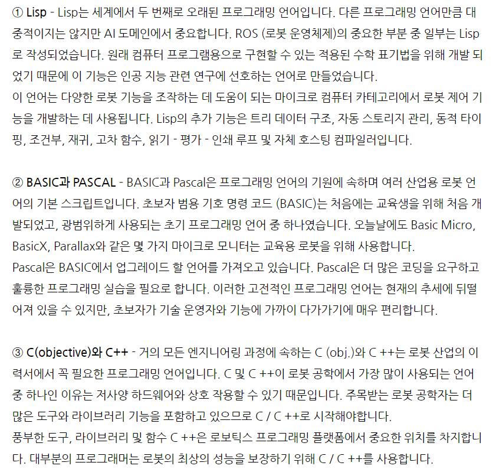
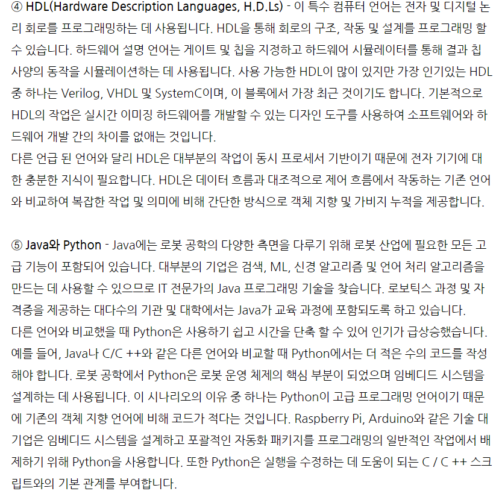
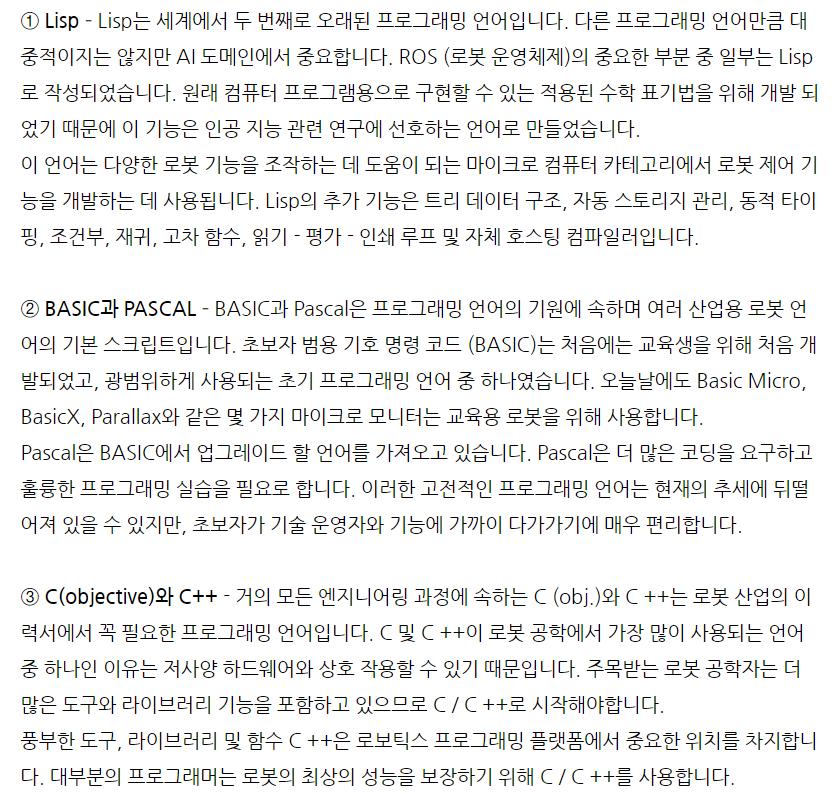
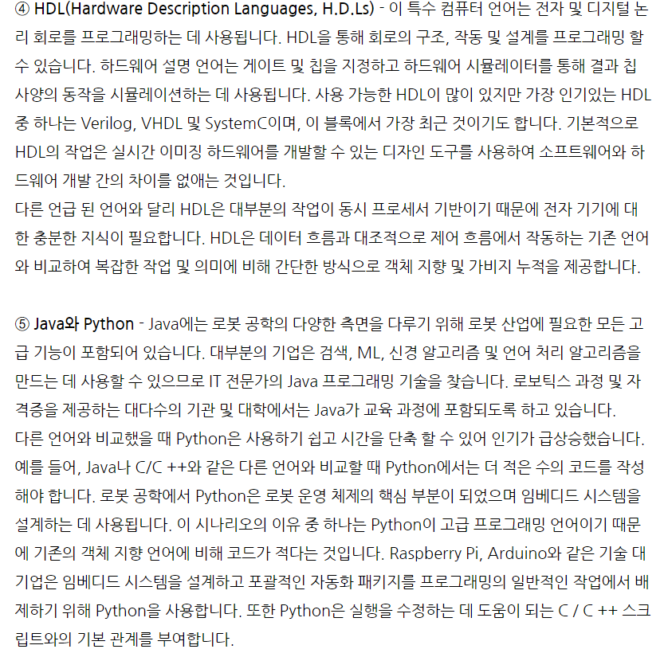

로봇프로그래밍
로봇에게 명령을 하려면 로봇이 알아들을 수 있는 기계어 코드를 넣어줘야합니다.
로봇제어는 컴퓨터과학, 전자,전기, 메카트로닉스, 머신러닝 및
인공지능을 포함합니다.
로봇분야에서 경력을 쌓기 위해서는 강력한 프로그래밍 언어와 함께 전문화가 필요하지요.
로봇산업에 수요가 높은 상위 5가지 프로그래밍언어는 Lisp, BASIC 과 PASCAL, C(objective)와 C++,
HDL(Hardware Description Languages,H.D.Ls),java와 Python입니다.
 


